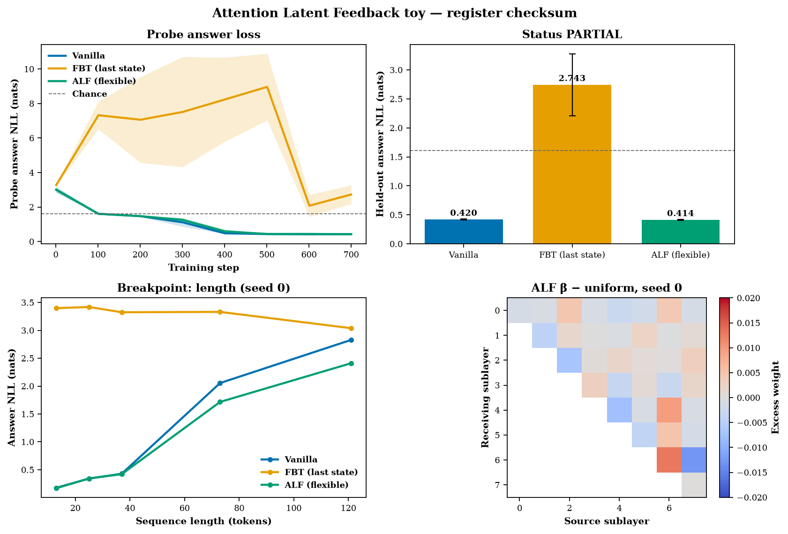

Attention Latent Feedback, CPU toy
Register-checksum traces. Vanilla, last-state feedback (FBT), and flexible-depth feedback (ALF), parameter-matched. The numbers are the pre-registered run in results.md.

Register-checksum traces. Vanilla, last-state feedback (FBT), and flexible-depth feedback (ALF), parameter-matched. The numbers are the pre-registered run in results.md.
